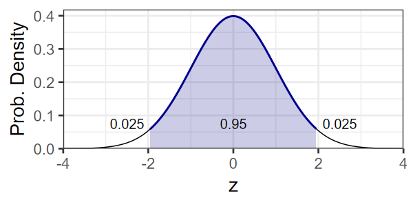

Confirmatory Data Analysis
EES 4891/5891
Probability & Statistics for Geosciences
Jonathan Gilligan
Class #14: Thursday, February 20 2025
Learning Goals
Learning Goals
- Become familiar with falsification as a scientific method
- Understand what a statistical null hypothesis is
- Learn how to use a \(z\)-test to test hypotheses when the data is normal and you know the variance
- Learn how to use a \(t\)-test to
test hypotheses when the data is normal and you don’t know the variance
- One-sample \(t\)-test to test hypotheses about one sample of data
- Two-sample \(t\)-test to test whether two sets of data were sampled from the same distribution
- Learn the general structure and logic of testing a statistical hypothesis
Testing Hypotheses
Philosophical Background
- What make science scientific?
- Demarcation Problem:
- How can we distinguish science from non-science or pseudo-science?
- How does a scientific method produce truth?
- Demarcation Problem:
- David Hume (1711–1776)
- You can’t rationally prove scientific principles from observations
- Karl Popper (1902–1994)
-
The Logic of Scientific Discovery (1934)
- You can’t prove that a scientific principle is true, but you can prove that a false principle is false
-
The Logic of Scientific Discovery (1934)
David Hume

Karl Popper
Falsification and Scientific Method
- Falsification and scientific method:
- You can’t prove that a scientific principle is true, but you can prove that a false principle is false
- A hypothesis is scientific if it allows us to make risky predictions
- A prediction is risky if a small number of
observations can prove it false
- “All swans are white”
- “This swan is black”
- Every time you make a risky proposition and it comes true, you gain confidence in the hypothesis
- We can never be certain that a hypothesis is true.
- But we can have a lot of confidence if it survives a great deal of testing


Statistics and Hypothesis Testing
- Statistical tests focus on a null hypothesis \(H_0\).
- If data make us doubt the null hypothesis, then we become more confident that another hypothesis may be true.
- Null hypothesis should be the most conventional or
boring idea.
- “These two distributions are the same.”
- “Newton’s laws of motion are correct.”
- Statistical tests can’t prove the null hypothesis is false
- Why not?
- But they can cast doubt on the null hypothesis
Which Tribe Arrived First?
Two Tribes
Two tribes lived in an area for more than 1000 years
-
There are disputes about which tribe arrived first
- Hypothesis 1: Tribe A arrived in 622 CE
- Hypothesis 2: Tribe B arrived in 615 CE
-
Archaeologists ask you to use 14C dating to estimate ages of wood artifacts from early settlements of both tribes
\[ \left\lbrace {\: \overline{t_A} = 650\: \text{CE} \pm 50 \mathrm{y} \atop \overline{t_B} = 750\: \text{CE} \pm 50 \mathrm{y} } \quad (1\sigma) \right. \]
- Three questions:
- How confident are you about each date (confidence or credible intervals)
- Are the observations compatible with the hypotheses? (hypothesis tests)
- How confident are you about which tribe got there first? (\(p\)-values)
Confidence Intervals
Can we assume that our estimate of \(\overline{t_A}\) is drawn from a normal distribution?
-
Assume \(\overline{t_A} \sim \mathcal{N}(\hat{\mu}_A, \sigma_A)\)
- Find \(t_{\text{min}}\) and \(t_{\text{max}}\) such that \(\mathbb{P}(t_{\text{min}} \le t_A \le t_{\text{max}}) = 95\%\)
-
Transform to a \(z\)-score (standardize):
\[ z_A = \frac{t_A - \hat{\mu}_A}{\sigma_A} \sim \mathcal{N}(0, 1) \]
-
The normal distribution is symmetrical, so we can write our condition:
\[ \mathbb{P}(z_{\text{min}} \le z_A \le z_{\text{max}}) = \mathbb{P}(|z_A| \le z_\alpha) \]
Find \(z_\alpha\) such that \(\mathbb{P}(|z_A| \le z_\alpha) = (100 - \alpha)\%\)
-
For 95% confidence interval, \(\alpha = 0.05\)

\[ \begin{align} z_\alpha &= \texttt{qnorm(0.975, 0, 1)} \\ &= \texttt{qnorm(0.025, 0, 1, FALSE)} \\ &= 1.96 \\ t_{\text{min}} &= \hat{\mu}_A - 1.96 \sigma_A = 552 \\ t_{\text{max}} &= \hat{\mu}_A + 1.96 \sigma_A = 748 \\ \end{align} \]
\(\mathbb{P}(552 \le t_A \le 748) = 95\%\)
\(\mathbb{P}(652 \le t_B \le 848) = 95\%\)
Interpreting Confidence Intervals
- What does it mean to say:
- \(\mathbb{P}(552 \le t_A \le 748) = 95\%\)
- \(\mathbb{P}(652 \le t_B \le 848) = 95\%\)
- If you do the experiment many times, and calculate a 95%
confidence interval for each,
- then for 95% of the experiments, the true value of \(t_A\) will lie within the confidence interval for that experiment.
- It does not mean that for your experiment, there is a 95% probability that the true value of \(t_A\) lies within the interval.
Testing Hypotheses
Testing Hypotheses
- Assume \(t_A\) is normally distributed
- Null hypothesis: \(H_{0}\): \(\mu_A = 622 \: \text{CE}\)
Known Variance: \(Z\)-test
-
Assume we know the precision of the measurements
\[ \begin{aligned} \sigma_A &= \sigma_B = \sigma \\ z_A &= \frac{t_A - \mu_A}{\sigma} = \frac{t_A - 622}{50} \\ z_A &\sim \mathcal{N}(0,1) \end{aligned} \]
Use the \(Z\) test, based on the cumulative probability of the normal distribution.
Unknown Variance: \(t\)-test
We don’t know the precision of the measurements
Take \(n_A\) measurements and estimate precision from sample variance \(S^2\)
-
Calculate the \(T\) statistic
\[ \hat{T}_A = \frac{\overline{t_A} - \mu_A}{S_A / \sqrt{n_A}} \]
- use Student’s \(t\)-test, which is based on the \(T\)-distribution.
Known Variance: \(Z\)-test
- We know the precision of the measurements: \(\sigma_A = \sigma_B = \sigma\)
-
Null hypothesis:
- \(H_{0,A}\): \(\mu_A = 622\)
\[ \begin{aligned} z_A &= \frac{t_A - \mu_A}{\sigma} = \frac{t_A - 622}{50} \\ z_A &\sim \mathcal{N}(0,1) \\ \mathbb{P}(t_A \ge 650) &= \mathbb{P}\left( z_A \ge \frac{650 - 622}{50} \right) \\ &= \mathbb{P}\left( z_A \ge 0.56 \right) \\ &= 1 - \Phi(0.56) \approx 29\% \end{aligned} \]
- There is a very good chance that we could measure a date of 650 CE or later if \(\mu_A = 622\).
-
Null Hypothesis:
- \(H_{0,B}\): \(\mu_B = 615\)
\[ \begin{aligned} z_B &= \frac{t_B - \mu_B}{\sigma} = \frac{t_B - 615}{50} \\ z_B &\sim \mathcal{N}(0,1) \\ \mathbb{P}(t_B \ge 750) &= \mathbb{P}\left( z_B \ge \frac{750 - 615}{50} \right) \\ &= \mathbb{P}\left( z_B \ge 2.7 \right) \\ &= 1 - \Phi(2.7) \approx 0.35\% \end{aligned} \]
- It is very unlikely that we’d measure a date of 750 CE or later if \(\mu_B = 615\).
Unknown Variance: \(t\)-test
Take \(n_A\) measurements of artifacts from tribe A, which give dates of \(\lbrace t_{A,1}, t_{A,2}, \ldots, t_{A,n_A}\rbrace\)
Assume \(t_A\) are normally distributed: \(t_A \sim \mathcal{N}(\mu_A, \sigma_A)\).
-
The Central Limit Theorem tells us that
\[ \begin{aligned} E(\overline{t_A}) &= \mu_A \\ V(\overline{t_A}) &= \frac{\sigma_A^2}{n_A}, \end{aligned} \] but we don’t know \(\sigma_A\), so we estimate it from the sample variance:
\[ S_A^2 = \frac{1}{n_A - 1} \sum_{i = 1}^{n_A} \left( t_{A,i} - \overline{t_A} \right)^2 \]
-
\(t_{A,i} - \overline{t_A}\) have independent values drawn from a normal distribution \(\mathcal{N}(0,\sigma_A)\), so we can scale them:
\[ \frac{1}{\sigma_A} (t_{A,i} - \overline{t_A}) \] will have unit variance.
-
The quantity
\[ (n - 1) \frac{S^2}{\sigma^2} = \frac{1}{\sigma^2} \sum_{i = 1}^{n} \left( t_i - \overline{t}\right)^2 \] is distributed according to the \(\chi_\nu^2\), or chi-squared distribution for \(\nu = n - 1\) degrees of freedom.
Chi-Squared Distribution
-
If \(t_i\) are \(n\) independent normally distributed measurements with variance \(\sigma^2\), then
\[ (n - 1) \frac{S^2}{\sigma^2} = \frac{1}{\sigma^2} \sum_{i = 1}^{n} \left( t_i - \overline{t}\right)^2 \] follows the \(\chi_\nu^2\), or chi-squared distribution for \(\nu = n - 1\) degrees of freedom.
-
What are “degrees of freedom”?
- The number of measurements that could change independently.
- We lose one degree of freedom for each constraint on the data.
- If the data have to average to \(\overline{t}\), this removes one degree of freedom
- If \(n = 1\), then \(\overline{t} = t_1\), so you can’t change the measurement without changing \(\overline{t}\) and you have zero degrees of freedom (\(1 - 1 = 0\))
- If \(n =2\), then you can change one variable, \(t_1 \rightarrow t_1 + \delta\), but \(t_2\) would have to make the opposite change \(t_2 \rightarrow t_2 - \delta\), so there is 1 degree of freedom \((2 - 1 = 1)\).
- For \(n = 3\), if \(t_1 \rightarrow t_1 + \delta_1\) and \(t_2 \rightarrow t_2 + \delta_2\), then you have to have \(t_3 \rightarrow t_3 - (\delta_1 + \delta_2)\). \(t_3\) isn’t independent from \(t_1\) and \(t_2\), so there are 2 degrees of freedom (3 - 1 = 2).
Student’s \(t\)-test
One-Sample \(t\)-test
- Null hypothesis \(H_0\): \(\mu_A = 622\)
- Alternate hypothesis \(H_a\): \(\mu_A > 622\)
- One-sided, one-sample \(t\)-test:
-
\(T\)-statistic
\[ \hat{T} = \frac{\overline{t_A} - \mu_A}{S_A / \sqrt{n_A}} \]
Compute \(\mathbb{P}(t > \hat{T}) = 1 - F_{t_\nu}(\hat{T})\), where \(F_{t_\nu}\) is the cumulative distribution function of the \(t\)-distribution for \(\nu\) degrees of freedom.
-
- Suppose \(\hat{T} = 1.94\).
- If \(n_A = 4\), \(1 - F_{t_4}(1.94) = 13\%\), so we can’t reject \(H_0\)
- If \(n_A = 12\), \(1 - F_{t_{12}}(1.94) = 4\%\), so we reject \(H_0\) at the 5% level.
- 4 measurements aren’t enough to tell the difference between
tribe A arriving at 622 versus 650 CE.
- 12 measurements are sufficient to tell the difference, and confidently say that the tribe probably arrived after 622.
One-Sample \(t\)-Test in R
-
Sample some data:
-
Run a t-test
## ## One Sample t-test ## ## data: t_A ## t = -0.48173, df = 3, p-value = 0.6685 ## alternative hypothesis: true mean is greater than 622 ## 95 percent confidence interval: ## 581.4812 Inf ## sample estimates: ## mean of x ## 615.1151
-
-
Now try with 12 samples
## ## One Sample t-test ## ## data: t_A ## t = 2.7604, df = 11, p-value = 0.009271 ## alternative hypothesis: true mean is greater than 622 ## 95 percent confidence interval: ## 636.7262 Inf ## sample estimates: ## mean of x ## 664.1454
Two-Sample \(t\)-Test
- Null hypothesis \(H_0\): \(\mu_A = \mu_B\)
- Alternate hypothesis \(H_a\): \(\mu_B > \mu_A\)
- One-sided two-sample \(t\)-test:
-
Compute the two-sample \(T\)-statistic
\[ \hat{T} = \frac{\overline{t_B} - \overline{t_A}} {\sqrt{\frac{S_B^2}{n_B} + \frac{S_A^2}{n_A}}} \sim t_{\nu'} \] where \(\nu'\) depends on what we know about whether \(t_A\) and \(t_B\) have the same variance.
R will calculate \(\nu'\) so we don’t have to worry about the formulas in the textbook
-
-
Try it in R
## ## Two Sample t-test ## ## data: t_B and t_A ## t = 3.074, df = 19, p-value = 0.9969 ## alternative hypothesis: true difference in means is less than 0 ## 95 percent confidence interval: ## -Inf 102.8415 ## sample estimates: ## mean of x mean of y ## 729.9636 664.1454
The Logic of Statistical Tests
The Logic of Statistical Tests
- Five Steps:
- Identify the appropriate test and test statistic
- e.g., \(t\)-test and \(T\) statistic
- Define the null hypothesis
- e.g., \(H_0\): \(\mu_1 = \mu_2\)
- Define an alternate hypothesis:
- e.g., \(H_a\): \(\mu_1 > \mu_2\) (one-sided)
- \(H_a\): \(\mu_1 \ne \mu_2\) (two-sided)
- Obtain the null distribution
- Distribution of the test statistic if \(H_0\) is true
- Identify the appropriate test and test statistic
- Compute \(p\)-value
- Probability that you’d see values as extreme as the observed test statistic if \(H_0\) is true
- Compare to test level \(\alpha\)
- e.g., \(\alpha = 0.05\)
- \(p < \alpha\): Reject \(H_0\) (guilty)
- \(p \ge \alpha\): Insufficient evidence to reject \(H_0\) (not guilty \(\ne\) innocent)